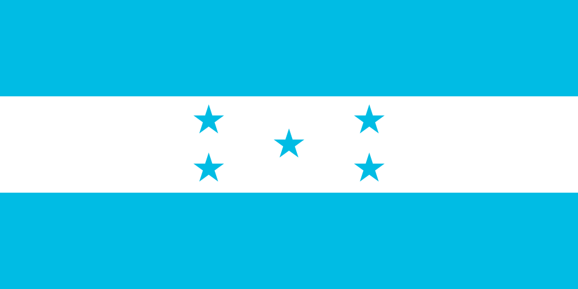

About me
My name is Christian Martinez. I am a student at Brigham Young University - Idaho. I am currently enrolled in the WDD 131 course, which focuses on dynamic web fundamentals.

Tegucigalpa, Honduras

Honduras is a Central American country known for its rich natural beauty, including tropical rainforests, mountainous landscapes, and the second-largest barrier reef in the world. Its culture blends indigenous, African, and Spanish influences, visible in its music, cuisine, and traditions. Tegucigalpa is the capital, while major cities like San Pedro Sula drive the economy. Despite facing social and economic challenges, Honduras is also recognized for its biodiversity and vibrant heritage.